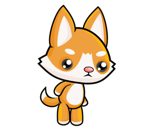
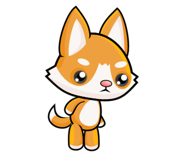

Kako napraviti animaciju¶
Jednostavan način da dobijete animaciju je smjestiti dio programa koji jedan okvir crta u zasebnu funkciju. U pravilu ćemo ovu funkciju nazvati new_frame u programima, iako može imati bilo koje drugo ime.
Promjena crteža¶
Da bi dobila animaciju, funkcija koja crta okvir mora na sljedećem pozivu stvoriti crtež malo drugačiji od prethodnog, jer bez promjena nema animacije. Da bi novi crtež bio drugačiji, sam crtež mora ovisiti o vrijednostima nekih varijabli. Promjena vrijednosti varijabli o kojima crtež ovisi rezultirat će drugačijim crtežom.
Na primjer, evo kako možemo stvoriti program koji naizmjenično prikazuje manje i veće srce.


Funkcija koristi varijablu image_index koja dobiva samo vrijednosti 0 ili 1. Ova se varijabla koristi kao indeks (redni broj) slike na popisu slika, koja se sastoji od dvije slike. Na temelju varijable image_index, program odlučuje koja će od dvije slike biti prikazana. Svakom novom izvedbom funkcije new_frame, varijabla image_index mijenja vrijednost (ako je bila 0, dobiva vrijednost 1 i obrnuto), mijenjajući tako prikazanu sliku.
Kaže se da varijable od kojih crtež ovisi opisuju scenu. Može postojati jedna ili više takvih varijabli. U primjeru sa srcem, scenu opisuje jedna varijabla, a to je varijabla image_index.
U općenitom slučaju prilikom stvaranja novog okvira animacije koristimo stare vrijednosti varijabli koje opisuju scenu kako bismo izračunali njihove nove vrijednosti. Pri tome se nove vrijednosti mogu ili ne moraju razlikovati od starih. To računanje nazivamo nadogradnjom scena.
Globalne varijable¶
Da biste mogli ažurirati scenu u funkciji new_frame, varijable koje opisuju scenu moraju imati vrijednosti prije i nakon izvršavanja funkcije new_frame. Stoga ove varijable moramo oblikovati (dodijeliti im prve vrijednosti) u glavnom dijelu programa. Kad takve varijable koristimo u funkciji, nazivamo ih globalnim varijablama. Suprotno tome, varijable izrađene u samoj funkciji nazivaju se lokalnim varijablama i postoje samo tijekom izvršavanja funkcije.
Pri dodjeljivanju vrijednosti globalnoj varijabli u funkciji, trebali bismo na početku funkcije naznačiti da su to varijable koje već postoje i formirane su izvan te funkcije. Za varijablu image_index u gornjem primjeru, to smo postigli tako što smo u prvi red funkcije zapisali global image_index. Da varijablu nismo deklarirali globalnom, Python bi pokušao formirati novu lokalnu varijablu istog naziva prilikom dodjeljivanja vrijednosti varijabli.
Kad postoji više globalnih varijabli koje namjeravamo izmijeniti u funkciji, nakon riječi global treba navesti nazive svih takvih varijabli, odvojene zarezima.
Brzina animacije¶
Brzina animacije određuje se trajanjem svakog okvira, to jest brojem prikazanih okvira u jedinici vremena. Da označimo brzinu u kojoj se pojavljuju uzastopni okviri, koristimo kraticu (također jedinicu za mjerenje) fps - frames per second. Kada stvaramo animaciju, jedna od stvari koju trebamo učiniti je odabrati brzinu prikazivanja i postaviti je u naš program kao broj okvira koji želimo da program stvori i prikaže u sekundi.
U prethodnom programu koristili smo 2 okvira u sekundi da bismo dobili ritam sličan brzini otkucaja srca. Pritom smo jasno razlikovali dva okvira koja se pojavljuju naizmjenično. Za dobivanje dojma pokreta trebamo samo veće brzine i više slika.
Za animaciju pokreta obično se koristi najmanje 15 fps, jer pri sporijim brzinama prikazivanja može izgledati isprekidano. Primjerice, TV emisije obično koriste 24 fps, a danas se video igre ispod 30 fps ne smatraju dovoljno dobrim. Čak i brže animacije mogu pružiti još bolje efekte za neke gledatelje, ali one su i skuplje za stvaranje i prikazivanje.
Ako smo postavili vrlo veliku brzinu u svojim programima, možda neće biti moguće da naše računalo postigne takvu brzinu stvaranja slike niti takvu brzinu prikaza. U tom se slučaju neće pojaviti pogreške, ali stvarna (efektivna) brzina kadra bit će manja (ona koju računalo može postići).
Animacija trčanja iz uvodnog teksta može se postići programom vrlo sličnim srčanom primjeru. Jedina temeljna razlika je u tome što koristi veći broj slika (osam umjesto dvije) i veću brzinu prikazivanja.


 



Isprobajte različite stope kadrova i pogledajte kako taj parametar utječe na izgled animacije. Naravno, osim broja frejmova u sekundi, na cjelokupno iskustvo utječe i to koliko se uzastopne slike razlikuju (više slika s manjim razlikama daje bolji učinak, ali zahtijeva i veću brzinu prikazivanja).
Sumirajmo što trebate učiniti da biste stvorili animaciju:
definirati globalne varijable koje opisuju scenu (ti će se podaci mijenjati tijekom animacije);
definirati funkciju
new_framekoja ažurira podatke o likovima i objektima na sceni, a zatim crta scenu (ne zaboravite navesti globalne varijable koje se mijenjaju u funkciji nakon riječiglobal);na kraju programa pozovite funkciju
pygamebg.frame_loop(fps, new_frame), gdje je fps željeni broj frejmova u sekundi. Funkcija frame_loop, pored svega što je obavljala funkcija wait_loop, još i omogućava da se funkcija new_frame poziva zadani broj puta u sekundi. Zato ćemo u animacijama programe završavati funkcijom frame_loop umjesto wait_loop.
Animacije - pitanja¶
-
Q-67: Povežite trajanje okvira s brojem okvira u sekundi.
Pokušaj ponovo!
- 10 fps
- 100 milisekunde
- 20 fps
- 50 milisekunde
- 50 fps
- 20 milisekunde
- 100 fps
- 10 milisekunde

{kind=link}
Zadatak - prijedlog: Ako želite, pokušajte stvoriti Python program koji će u krug prikazivati vaše odabrane fotografije ili druge slike po vašem izboru (ako su sve vaše slike iste veličine, već ste naučili sve što trebate). Imajte na umu da brzina kadra može biti manja od 1 fps i ne može biti cijeli broj (ali trebao bi biti pozitivan). Na primjer, u programu “prezentacije” koji predlažemo postoji prirodna potreba da svaka slika traje dulje od jedne sekunde.
Za prikaz svakog okvira na dvije sekunde, koliko okvira u sekundi treba postaviti u programu?
- image_index = image_index + 1 % num_images
- Pokušaj ponovo
- image_index = (image_index % num_images) + 1
- Pokušaj ponovo
- image_index = (image_index + 1) % num_images
- Točno
- image_index = image_index % (num_images + 1)
- Pokušaj ponovo
Q-68: U primjeru “Running”, bilo je potrebno da varijabla image_index ciklično uzme samo one vrijednosti koje odgovaraju položajima slika na listi. Kad imamo osam slika, te su vrijednosti 0, 1, 2, 3, 4, 5, 6, 7, 0, 1, 2, itd. Općenito, za n slike su ove vrijednosti 0, 1, 2, … n-1, 0, 1, 2, itd.
Podsjetimo da operator % označava operaciju izračunavanja ostatka nakon podjele. Ovom operacijom isti cilj možemo postići u kraćim zapisima. Koja od sljedećih naredbi može jednako zamijeniti ovaj dio programa?
image_index = image_index + 1 # prelazimo na sljedeću sliku if image_index == num_images: # ako nema sljedeće slike ... image_index = 0 # vrati se na prvu sliku